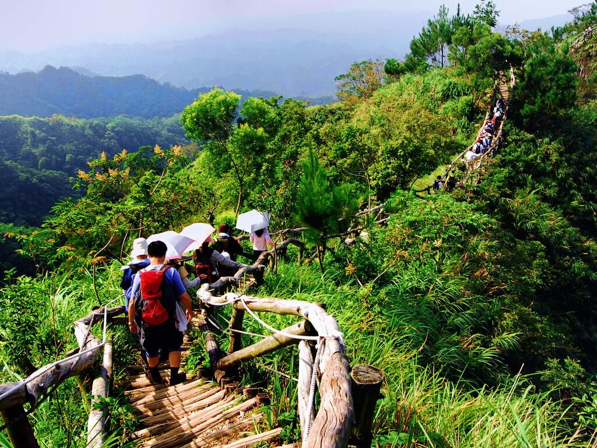
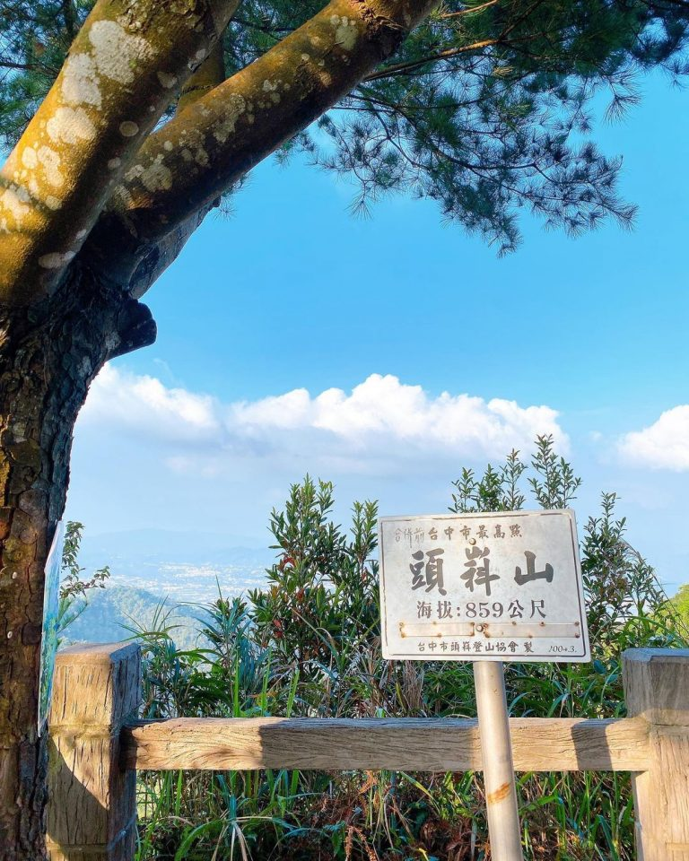
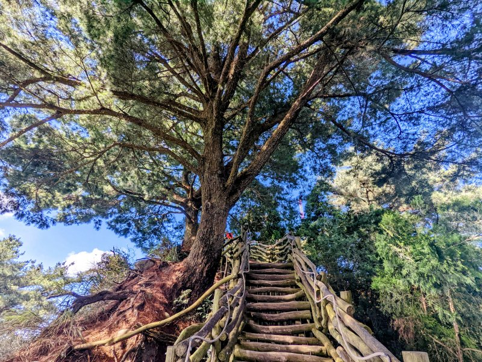
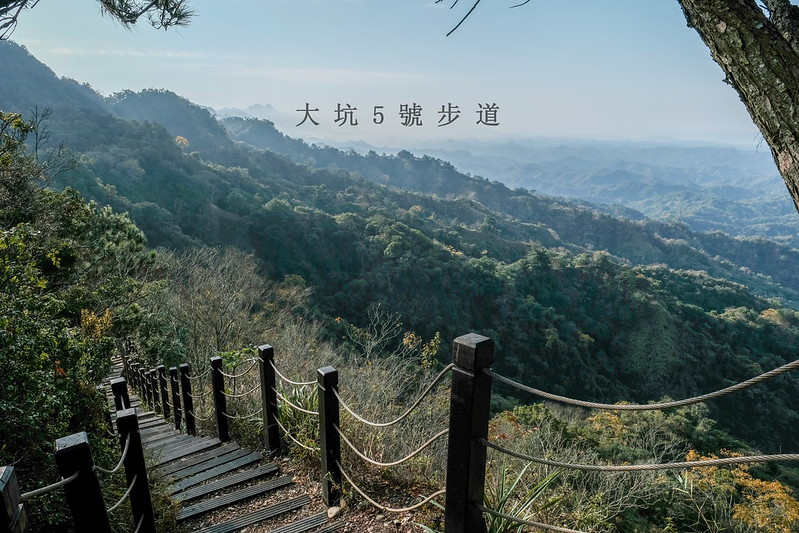

登山入口處：可從大坑圓環右轉橫坑巷，再經連坑巷左轉，繞過停車場往上走即為登山口。Google搜尋可找「大坑三號登山步道停車場」

3號步道全長約1.3公里，幾乎整條步道都是相思木圓木棧道，步道的陡坡也比前面介紹低難度的1號步道高上不少，前來挑戰可要先練練體能，比較適合平常就有運動習慣或登山經驗的人。1號～4號步道最終會連結到縱向的5號步道，可以一路往上挑戰台灣小百岳之一、也是台中最高峰的頭嵙山！

登山入口處：台中市北屯區斜頭巷，由中興嶺往新五村方向行進，至嶺馨芳蘭園右轉小巷即可到達。

縱向的5號步道全長約1.4公里，連結起1號～4號步道。5號步道沿著山稜線走，雖然坡度上下起伏多比較具有挑戰性，但步道沿途寬闊的山景好看又好拍，可以一覽頭嵙山的美景。步道途中不少涼亭以及休息區，還有巨大五葉松、連結5號步道跟5-1步道的黑松亭也是很多人會停下腳休息，慢下來欣賞美景的地方。比起5號步道都是高底起伏大的圓形枕木步道，5-1步道有部分路段是一般的山坡石頭路面，連結5號步道不再往頭嵙山頂的話可以直接環形走一圈，或是往頭嵙山登頂再回來也是很多人會選擇的路線。
